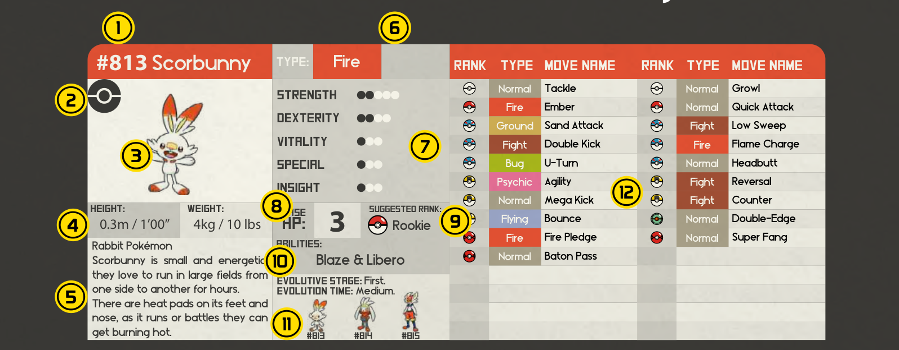

- 名稱與編號：用名稱辨認你夥伴的物種，用編號在圖鑑裡快速找到牠。
- 初始寶可夢：標有這個圖示的條目，是我們建議新玩家當作初始寶可夢的選擇，不過你可以自由挑選。
- 寶可夢圖片：這個條目的寶可夢的基本樣貌。
- 平均身高與體重：這個物種大多落在平均值附近，個體之間可能略有差異。
- 圖鑑資訊／傳說：如果你有寶可夢圖鑑裝置，可以掃描野生寶可夢來取得資料；不過最稀有的寶可夢幾乎沒有資料，甚至完全沒有。
- 寶可夢屬性：這隻寶可夢主要的能量屬性，有些寶可夢有兩種屬性。
- 起始能力值與上限：黑色標記的是這隻寶可夢在啟程級時的能力值；白色標記的是該能力值的上限，也就是能達到的最高數值。
- 基礎 HP：這個物種的 HP。可以透過寶可夢的體魄能力值提高。
- 建議階級：在野外遇到這隻寶可夢時，這個物種通常的階級。你也可以依遭遇的需要自行調整。
- 特性：這隻寶可夢天生能使用的特性。詳情請看「特性規則」。
- 進化階段：這隻寶可夢所在的進化鏈與階段，以及最常見的進化方式。
- 招式庫：這隻寶可夢能透過訓練和提升階級自己學會的全部招式。詳情請看學習新招式與「招式規則」。